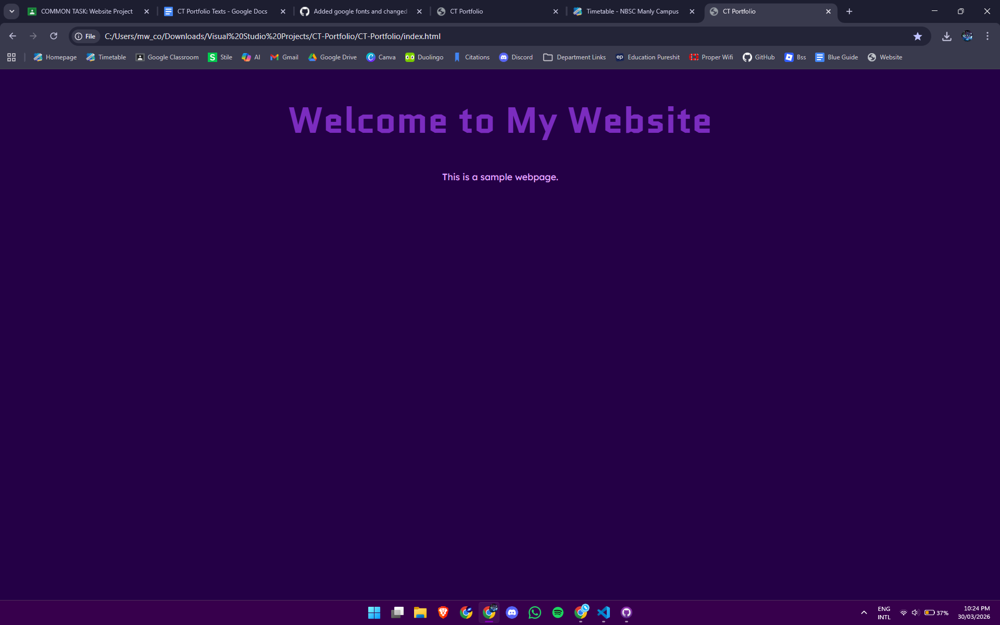
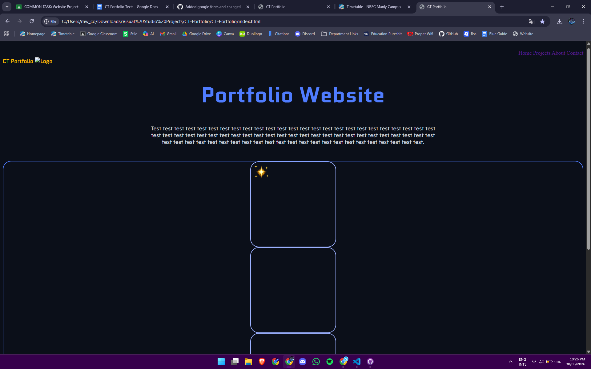
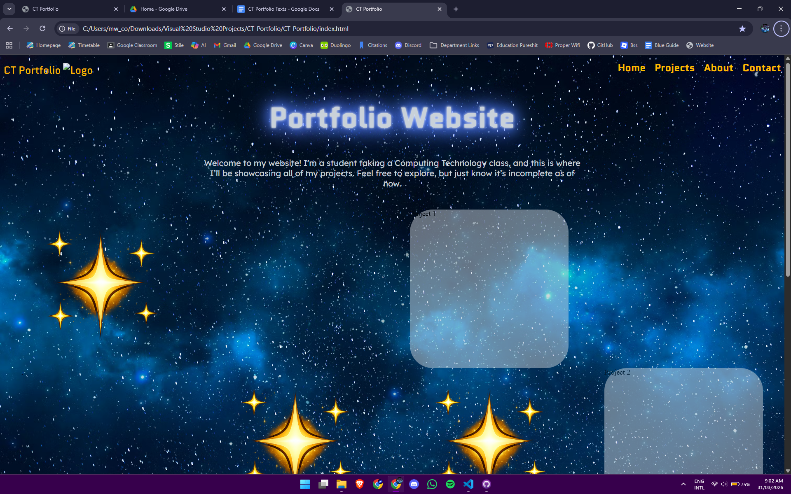

This is the page dedicated to showcasing my first project in the class: building the portfolio website.
The first things we did at the start of the year was just theory. We learnt about the roles of HTML, CSS, and JS and about the history of the internet. Then we started coding, using some coding tutorial websites like W3Schools are freeCodeCamp to teach us the basics, before applying our knowledge in some test websites. Then we learnt how to use flexboxes to structure our website after JLR explained it to us before being taught the basics of github - how pushing and pulling worked, committing, etc.
Now that we had all of the necessary skills, we took a lesson to plan how our website would look. I had multiple ideas, but I settled on a space design to keep my website unique and to push my skills.

With everything ready, we made a repository and started work on our website that we would be maintaining over the next 2 years to add more projects to. Everyone started with the boilerplate, but then different people took different approaches from there. Some people focused on their HTML structure first like my friend MK, but I focused on CSS first. My first changes were changing the colours and font of the website.
I used some free colour palette websites to choose some colour for my website, so I changed from this purple design later. This website just has text, so then I planned to add the flexboxes. I planned these to house 3 different things: some would be blank, some would have a link that would take the user to the allocated project website, and some would have a decorative image of a star. At the time, the flexboxes weren’t structuring properly, so I decided to take a break from them and start on the header.


Now I really wanted to make my website look good. I started by adding a space background to fill in all of the empty space, then I touched up the header. While I was touching up the header I discovered a glow effect, which paired well with my theme, so I made the title glow too. Then I fixed the flexboxes so that they were in the positions they were meant to be. I also made the webpage for the first project (the webpage you are reading this on now) and added a link to it in the first box.
The website was almost ready at this point. I just needed to add some more CSS effects to make it look more polished, and fix some bugs. After replacing the old star image, it was done. I’m really happy with how it turned out and I cant wait for what projects I’ll do in the future.